Volatility Forecast Lab
Evidence dashboard · central-bank documents, hybrid search and volatility forecasting
Documents—
Chunks—
Eval questions—
Best recall@5—
Corpus
Retrieval
Recall@5 and MRR@10 from the frozen evaluation. Switch the document type to compare results.
Question hit/miss grid
Forecasting
Mean QLIKE loss relative to HAR. The chart shows model-level aggregates only.
Data quality
Platform evidence
Architecture
Document flow, evidence gates and retrieval components.

Build provenance
Aggregate source files and SHA-256 hashes used for this build.